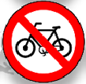
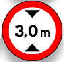
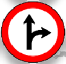

O CTB tem como função Reger/Legislar as vias terrestres, e somente terrestres, em nível nacional.
É tambem tem como DEVER Garantir segurança, Respeito pela Vida e Preservar o meio ambiente Esses são os deveres do CTB.
O trânsito, em condições seguras é um direito de todos e dever dos órgãos do SNT (Sistema Nacional de Trânsito).
O SNT e composto pelo conjunto de órgãos da união, dos estados, do Distrito Federal e dos Municípios que exercem atividades relativas ao Trânsito.
Atualmente o Coordenador máximo do SNT e o Ministerio das cidades.
De acordo com o CTB os órgãos normativos são os Conselhos de Trânsito, que possuem como atribuição principal a elaboração de normas, de forma complementar ao estabelecido no Código de Trânsito Brasileiro. Por elaborarem as normas, também respondem as consultas relativas à aplicação e compreensão da legislação de trânsito em vigor. Oberseve a abaixo;
▶ CONTRAN - Conselho Nacional de Trânsito
▶ CETRAN - Conselho Estadual de Trânsito
▶ CONTRANDIFI - Conselho de Trânsito do Distrito Federal
De acordo com o CTB os órgãos Executivos tem como sua função principal a fiscalização e cumprimento da legislação de trânsito estabelecida pelo CTB.
▶ DENATRAN - Departamento Nacional de Trânsito
▶ DETRAN - Departamento Estadual de Trânsito
▶ CIRETRAN - Circunscrição Regional de Trânsito
De acordo com o CTB os órgãos Executivos Rodoviarios, por meio da importante função de fiscalizar, são responsáveis por manter a ordem no trânsito.
▶ DNIT - Departamento Nacional de de Infraestrutura e transporte (Atua nas rodovias e estradas federais)
▶ DER - Departamento de Estrada e Rodagens (Atua em rodovias e estradas estaduais)
De acordo com o CTB os órgãos Fiscalizadores atua na fiscalização do comprimento de todas as regras obrigatórios de acordo com o CTB.
▶ PRF - Policia Rodoviaria Federal
▶ PM Rodoviaria Estadual - Policia Militar Rodoviaria Estadual
▶ PM (CPRV, BPTRAN) - Comando de Policiamento Rodoviário, Batalhão de Policiamento de Trânsito
De acordo com o CTB a JARI é um órgão autônomo e colegiado responsável pelo julgamento dos recursos interpostos contra a decisão da autoridade do trânsito que impôs as penalidades.
▶ JARIs - Junta Administrativa de Recursos de Infração
O processo tem um ano de duração à contar da data de cadastro do candidato no sistema BINCO (Base Índice Nacional de Condutores) e RENACH (Redistro Nacional de Carteira de Habilitação). Lembre-se também que a cada processo aberto um novo RENACH é criado.
Para iniciar o processo de habilitação é necessário ter os seguintes requisitos.
Assim como existem pré requisitos também existem restrições que podem impedir alguém de iniciar seu processo.
OBS: Fumantes podem tirar carteira.
Parada Obrigatoria
Assinala ao condutor que deve parar seu veículo antes de entrar ou cruzar a via/pista.
Dê a preferência
Assinala ao condutor a obrigatoriedade de dar preferência de passagem ao veículo que circula na via que vai entrar ou cruzar, devendo para tanto reduzir a velocidade ou parar o veículo se necessário.
Sentido Proibido
Assinala ao condutor a proibição de seguir em frente ou entrar na pista ou área restringida pelo sinal.
Proibido Virar à Esquerda
Assinala ao condutor a proibição de realizar o movimento de converção à esquerda.
Proibido Virar à Direita
Assinala ao condutor a proibição de realizar o movimento de converção à direita.
Proibido retorna à Esquerda
Assinala ao condutor de veículo a proibição de retorna à esquerda.
Proibido retorna à Direita
Assinala ao condutor de veículo a proibição de retorna à direita
Proibido Estacionar
Assinala ao condutor que é proibido o estacionamento de veículos.
Estacionamento Regulamentado
Assinala ao condutor que é permitido o estacionamento de veículos.
Proibido Parar e Estacionar
Assinala ao condutor que é proibido a parada e estacionamento de veículos.
Proibido Ultrapassar
Assinala ao condutor que é proibido realizar o movimento de ultrapassagem no trecho regulamentado, pela(s) faixa(s) destinada(s) ao sentido oposto de circulação.
Proibido Mudar de Faixa ou Pista de Trânsito da Esquerda para Direita
Assinala ao condutor que, no trecho objeto da regulamentação, é proibida a mudança de faixa ou pista da esquerda para direita.
Proibido Mudar de Faixa ou Pista de Trânsito da Direita para Esquerda
Assinala ao condutor que, no trecho objeto da regulamentação, é proibida a mudança de faixa ou pista da direita para esquerda.
Proibido Trânsito de Caminhões
Assinala ao condutor de caminhão a proibição de transitar a partir do ponto sinalizado, na área, via/pista ou faixa.
Proibido Trânsito de Veículos Automotores
Assinala ao condutor de qualquer veículo automotor a proibição de transitar, a partir do ponto sinalizado, na área, via/pista ou faixa.
Proibido Trânsito de Veículos de Tração Animal
Assinala ao condutor de veículo de tração animal a proibição de transitar, a partir do ponto sinalizado, na área, via/pista ou faixa.
Proibido Trânsito de Bicicletas
Assinala ao ciclista a proibição de transitar a partir do ponto sinalizado, na área, via/pista ou faixa.
Proibido Trânsito de Tratores e Máquinas de Obras
Assinala ao condutor de tratores e máquinas de obras a proibição de transitar a partir do ponto sinalizado, na área, via/pista ou faixa.
Peso Bruto total Máximo Permitido
Regulamenta o peso bruto máximo permitido a um veículo para transitar na área via/pista ou faixa.
Altura Máximo Permitido
Regulamenta a altura máxima permitida a um veículo para transitar na área via/pista ou faixa.
Largura Máximo Permitido
Regulamenta a largura máxima permitida a um veículo para transitar na área via/pista ou faixa.
Peso Máximo Permitido por Eixo
Regulamenta o peso máximo permitido por eixo do veículo para transitar na área, via/pista ou faixa.
Comprimento Máximo Permitido
Regulamenta o comprimento máximo permitido do veículo ou combinação do veículo para transitar na área, via,pista.
Velocidade Máxima Permitida
Regulamenta o limite máximo de velocidade em que o veículo podederá circula. A velocidade indicada vale a partir do local onde estiver colocada a placa, até onde houver outra que a modifique.
Proibido Acionar Buzina ou Sinal Sonoro
Assinala ao condutor do veículo que é proibido acionar a buzina ou qualquer outro tipo de sinal sonoro, no local regulamentado.
Alfândega
Assinala ao condutor do veículo a presença de uma repartição alfandegária, onde a parada é Obrigatória.
Uso Obrigatório de Corrente
Assinala ao condutor de veículos que a partir do ponto sinalizado é obrigatório o uso de correntes atreladas às rodas do veículo. Essa obrigação se refere ao par de rodas motrizes.
Conserve-se à Direita
Assinala ao condutor do veículo a obrigatoriedade de manter-se à direita da pista, deixando livre a(s) faixa(s) da esquerda.
Sentido de Circulação da Via/Pista
Assinala ao condutor que a via/pista sinalizada tem sentido único de circulaçao.
Passagem Obrigatória
Assinala ao condutor que existe um obstáculo e que a passagem é obrigatoriamente feita à direita/esquerda do mesmo.
Vire à Esquerda
Assinala ao condutor do veículo a obrigatoriedade de realizar o movimento indicado.
Vire à Direita
Assinala ao condutor do veículo a obrigatoriedade de realizar o movimento indicado.
Siga em Frente ou à Esquerda
Assinala ao condutor do veículo que os movimentos de circulaçao permitidos são somente os indicados.
Siga em Frente ou à Direita
Assinala ao condutor do veículo que os movimentos de circulaçao permitidos são somente os indicados.
Siga em Frente
Assinala ao condutor do veículo a obrigatoriedade de realizar o movimento indicado.
Ônibus, Caminhões e Veículos de Grande Porte, Mantenha-se à Direita
Assinala ao condutor ônibus, caminhões e veículos de grande porte a obrigação de circular pela(s) faixa(s) da direita.
Duplo Sentido de Circulação
Assinala ao condutor do veículo que a via de circulação passa a ser de sentido duplo, após o ponto em que o sinal estiver colocado.